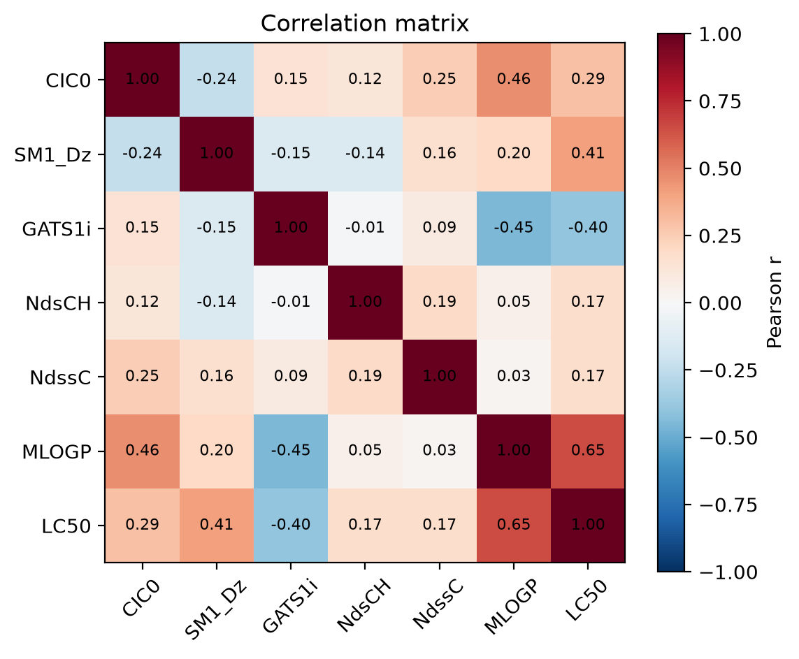

<section id="corr" style="background:#FFFFFF;color:#2D3340;font-family:'Source Sans 3', Arial, sans-serif;padding:96px 128px;display:flex;flex-direction:row;align-items:center;gap:64px">

<div style="flex:1;display:flex;flex-direction:column;gap:32px">
<h2 style="font-family:'Source Sans 3', Arial, sans-serif;font-weight:700;line-height:1.1;color:#002060;font-size:44px">Correlation with LC50</h2>
<p style="font-size:32px;line-height:1.4">MLOGP 0.65 · SM1_Dz 0.41 · CIC0 0.29 · NdssC 0.17 · NdsCH 0.17 · GATS1i −0.40</p>
</div>
<aside>Pearson r, −1 to +1, measures how well two variables follow a straight line. Exercise 2.1: sort the descriptors by correlation with LC50 and scatter the top one.</aside>
</section>
